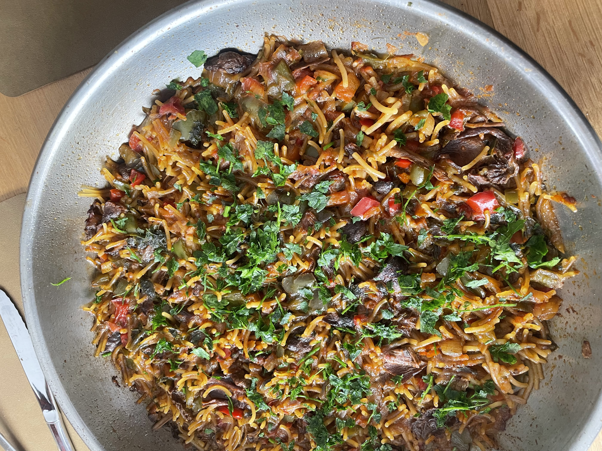

Fideuà
Ingrédients
4×
- seiche
- fruits de mer
- huile d'olive
- 1 oignon
- 1 poivron
- tomate râpée
- 500 g de fideus
- 1.5 l de fumet de poisson

Recette catalane.
Préparation
Étape 1
Cuire la seiche et les fruits de mer à feu doux pour qu’ils rendent leur eau.
Étape 2
Ajouter de l’huile d'olive, 1 oignon et 1 poivron.
Étape 3
Ajouter la tomate râpée.
Étape 4
Quand la tomate est cuite, ajouter 500 g de fideus (taille 4) et les dorer.
Étape 5
Mouiller avec 1.5 l de fumet de poisson et compter 15min à partir de l’ébullition.
Étape 6
Couvrir avec un couvercle et laisser reposer 5min.
Conseils
- Servir avec de l’aïoli.
Résumé
seiche
fruits de mer
Cuire
huile d'olive
1 oignon
1 poivron
Ajouter
tomate râpée
Ajouter
500 g de fideus
ajouter dorer
1.5 l de fumet de poisson
Mouiller
laisser reposer